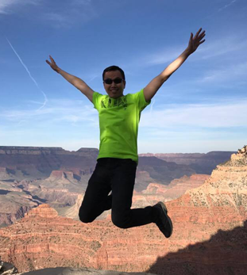

Team
Principal Investigator
ONG Wee Liat
Wee Liat arrived at ZJUI in 2018 and is currently an Associate Professor. Previously, he was a postdoc with Professors Xavier Roy (Chemistry, Columbia University) and Jonathan Malen (Mechanical Engineering, Carnegie Mellon University). Wee Liat received his Ph.D. in Mechanical Engineering at Carnegie Mellon University, working in the field of nanoscale heat transfer with Professors Jonathan Malen (experiment) and Alan McGaughey (simulation). Before his Ph.D., he worked at the Institute of Microelectronics (A*STAR, Singapore) on microfluidics and bioMEMs research for several years. Wee Liat received his B.Eng. and M.Eng. (Robotics) in Mechanical Engineering at the National University of Singapore with Professors Teo Chee Leong and Marcelo Ang Jr.